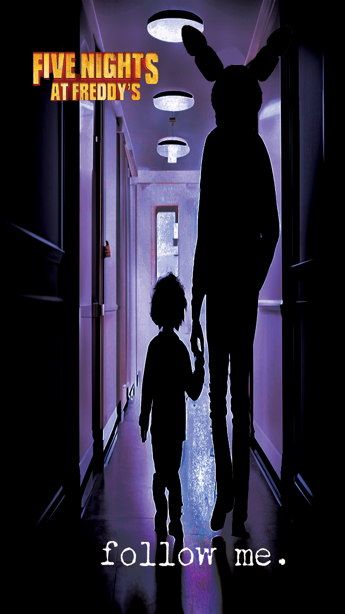
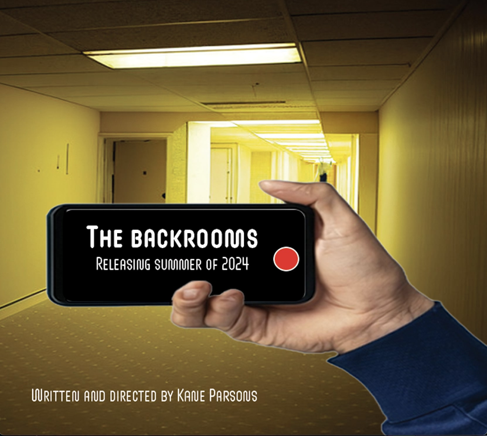
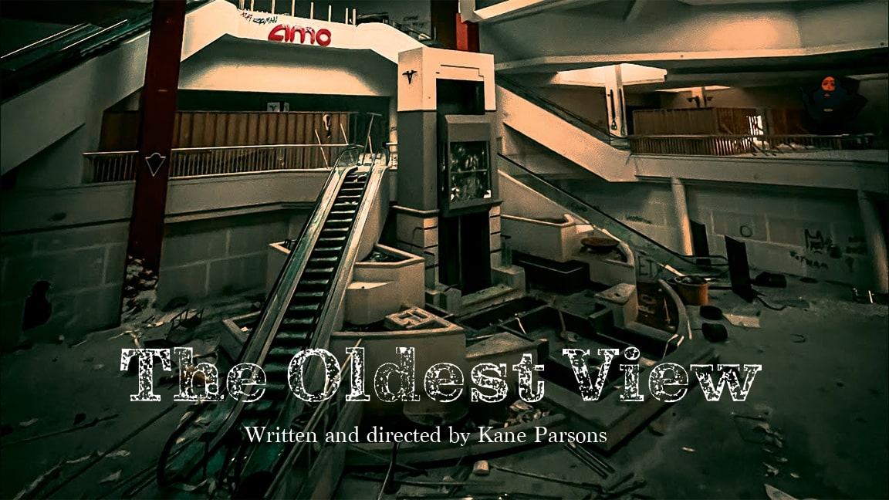
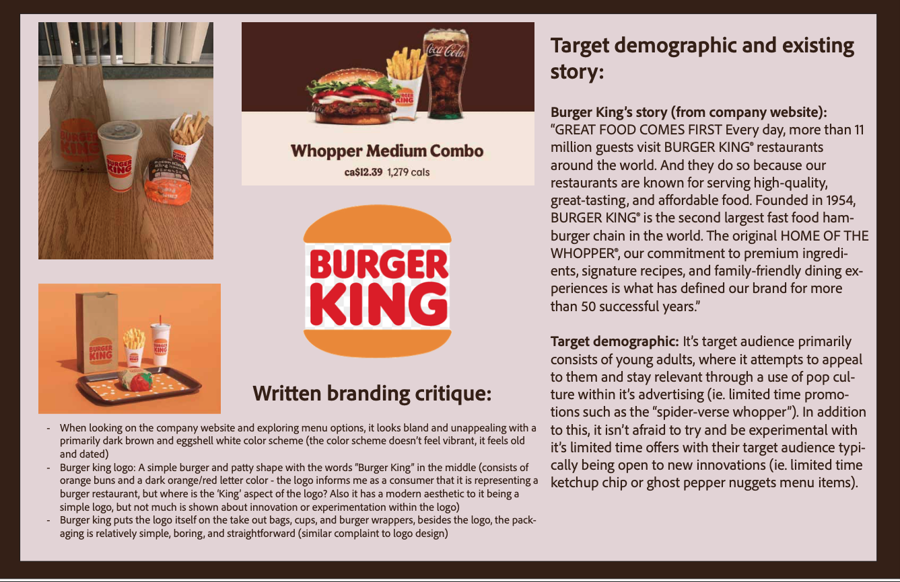
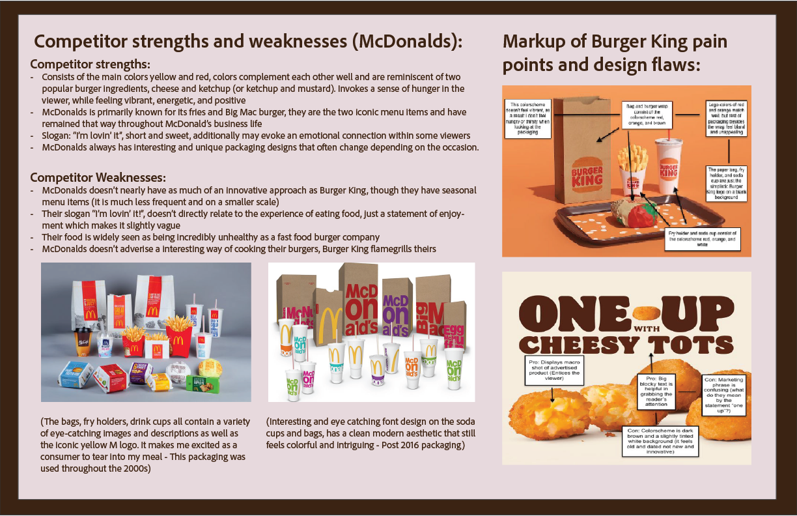
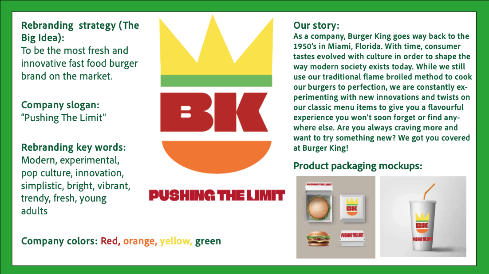
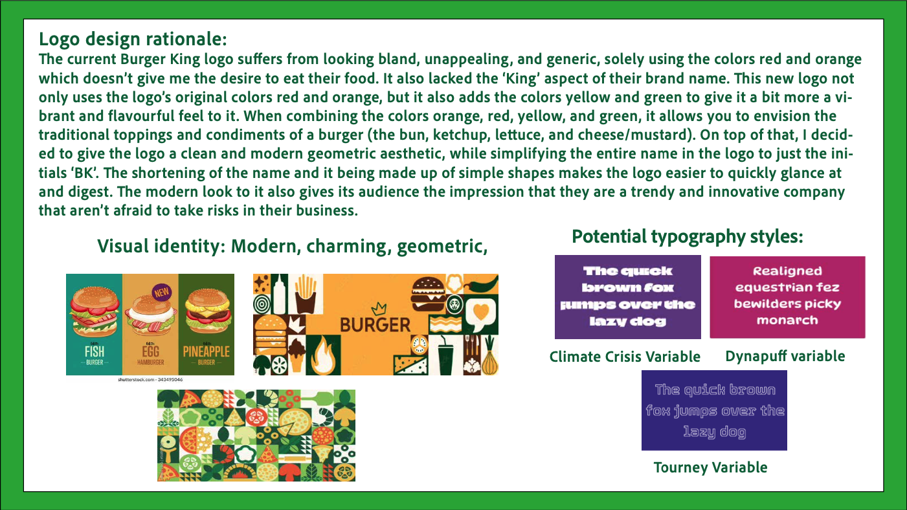
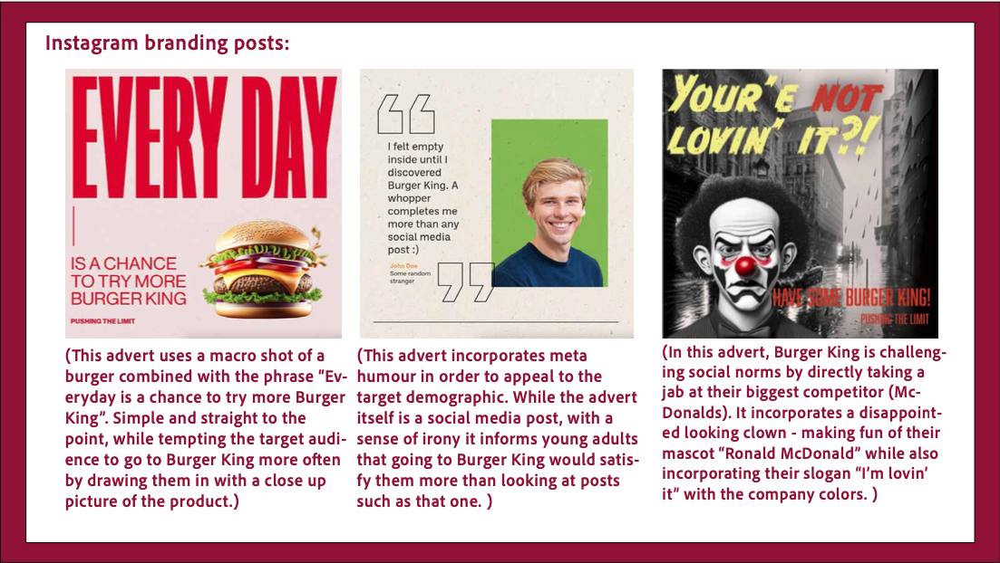
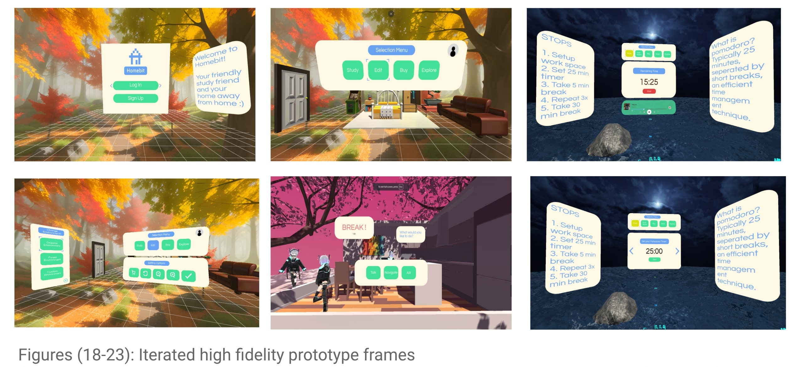
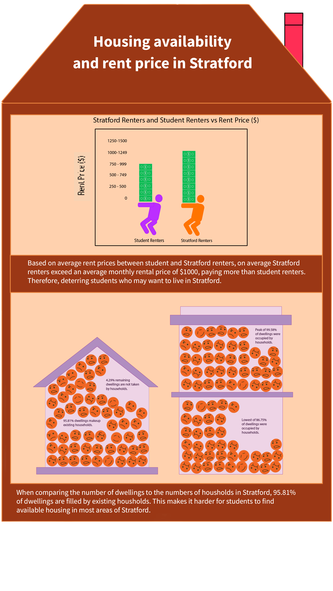

By clicking the button below, you can view a portion of my completed projects over the course of my Global Buisness and Digital Arts degree. Undergoing the creation of these projects involved exploring and learning how to use software such as Adobe Photoshop, Illustrator, and Adobe Premiere Pro.
End of section
Let Me Tell You About Myself.
About Me:
I have traveled internationally from Hong Kong to attend my studies at the University of Waterloo, as I wanted to see what it would be like to study abroad while taking part in a new culture. Upon discovering an interest in the marketing and product design aspect of my high school Design Technology class, it prompted me to pursue a degree in Global Business and Digital Arts. Having completed the IB Diploma program, I am a hard-working and determined person who is always open to trying new things, which prompts me to find a solution to any challenges I may face in my work.
End of section
My Portfolio:
Project #1 - Client Logo Design:
In one of my first class projects, I was given a set of goals and visions by a randomly assigned client, next I designed a logo that reflected aspects of their described personality. I initially created planning sketches of possible logos and explained my plans to my client. Based on the client's input, I created the final product.
This project was a good learning opportunity, as I had to learn how to fulfil the demands of a client within timed conditions while getting used to the software Adobe Illustrator. I also learned the importance of setting design specifications to guide my work. The final product was a sneaker next to a globe like a football, to represent their love for soccer and travelling the world in one logo.
Project #2 - Emotional Video:
In this class project, I aimed to create a short silent video that could convey two given emotions without any context, which were the emotions of "comfort" and "delight".
One of the ways I developed in terms of my video shooting, was that I constantly changed camera angles when filming each shot, so that I had a variety of options to choose from when deciding which shot looked best. During the editing process I accounted for the exposure, shadows, and feel of the colors (warm or hot) that were being portrayed in each scene. The way I edited my video played a big role in properly portraying the emotions I wanted to convey.
Project #3 - Movie poster design:
As a personal side project, I decided to design a variety of movie poster concepts in order to further refine my skills in photoshop during my spare time. These posters could be based on already existing series’ on YouTube or real movies, as well as other random ideas I had. In particular I found I enjoyed experimenting with the horror or thriller genres when designing posters due to the fact that I could try to think of creative ways to express suspense or create unease within the viewer.
Over the course of designing these posters, my primary goal was to test out various aspects of photoshop that I was previously unfamiliar with in order to enhance my designs. This included tinkering with the dodge/burn feature to lighten or darken areas of my posters, experimenting with the AI generative fill feature to create interesting imagery, and testing out various filters photoshop had to offer to give me new ways of expressing my desired genre.



Project #4 - Rebrand project:
In this project, I was assigned to pick a brand of my choice that had several inherent issues or flaws and I had the goal of fixing those flaws through an overhall of the brand. I chose "Burger King", primarily due to the fact that I felt their current look didn't match the brand's core identity. I also believed that their current logo especially felt bland while consisting of an unnapealing color scheme for a fast food burger joint. Therefore, I pitched my own take on aspects such as the company's logo, slogan, story, and social media posts in a way that would reflect innovation and creativity that would appeal to their primary audience of young adults. On top of this, I created a short commercial that would give my audience a general feel of the company's new identity.





Project #5 - Homebit Virtual Reality Prototype:
In this project, I worked in a group of three to design a working virtual reality speculative technology that would benefit the wellness of both international and domestic students at the University of Waterloo. This consisted of creating and further developing physical and virtual prototypes of our technology based on qualitative and quantitative data from user testing procedures. These procedures involved using the think aloud method (users dictating their thoughts while using the prototype) and filling out a usability survey where they ranked specific aspects of our prototype on a 5 point likert scale.
In speculative design, I learned there is room to be ambitious, you are coming up with concepts that could feasibly exist in the near future, so we shouldn’t limit ourselves to the technology that is readily available today. User centred design can also make potential users aware of current problems that may exist in their community that they may not have been previously aware of, making them desire your potential solution.

Project #6 - Stratford Housing Crisis:
In this project, as a group of 3 we had to analyse class collected data from our campus with an open dataset of our choice in order to determine potential reasons for the student housing crisis within the city of Stratford. We decided to compare elements such as the average price range across students and residents within Stratford, as well as the no. of dwellings vs households. We used a colourscheme consisting primarily of orange and purple, as we felt they complemented each other well to make a visually appealing design.
I learned that there are many interesting ways data can be portrayed, and creative imagery that doubles as a form of chart can make that data significantly easier to visualize. People holding stacks of money help to portray the extent of how expensive Stratford’s housing market is, while faces crammed inside of a tight building portrays the struggle for adequate living space. Making simple design decisions to our map such as adjusting the opacity of coloured zones and changing the line thickness around each zone also contributed to getting our message across in a straightforward manner.

Project #7 - Website design (Portfolio + class project):
I built two websites with my knowledge of HTML and CSS. One was a website informing the reader a bit about myself, including my goals, ambitions, and hobbies. The second is a portfolio website I decided to code from scratch (this website). Creating my initial biographical site was a challenging task, as I also needed to figure out how to properly implement aspects such as a functional grid system in order to make a responsive web page that wouldn’t break apart when I attempted to change the size of my web browser. Additionally this is the system most modern websites use to structure their content in a neat and tidy manner. Lastly, I considered how each individual element of the page would mix with other elements in order to fit in an aesthetically pleasing manner while considering styling el5ments such as background colour, padding, margins, and borders.